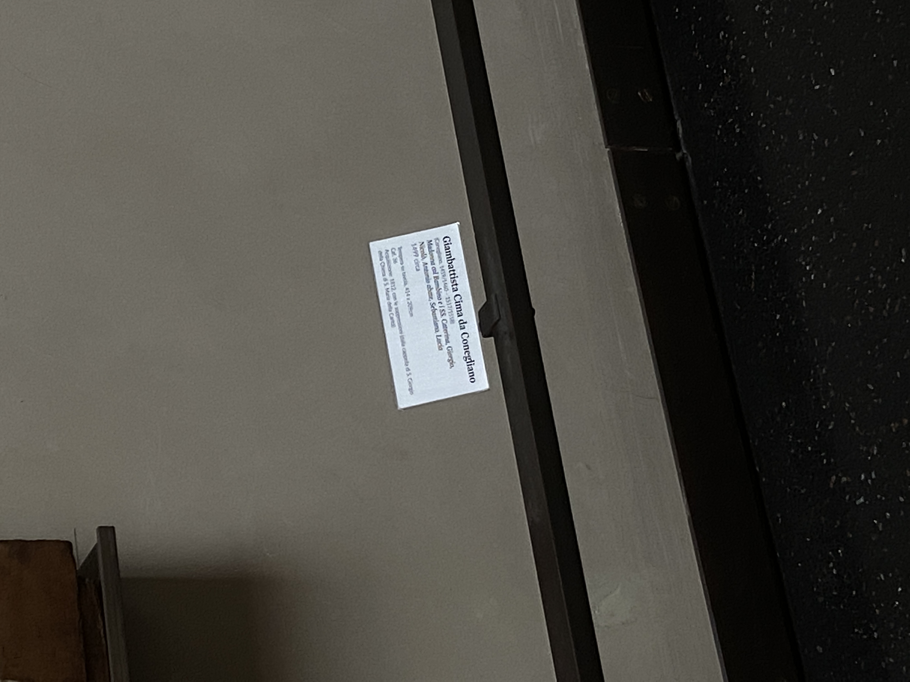
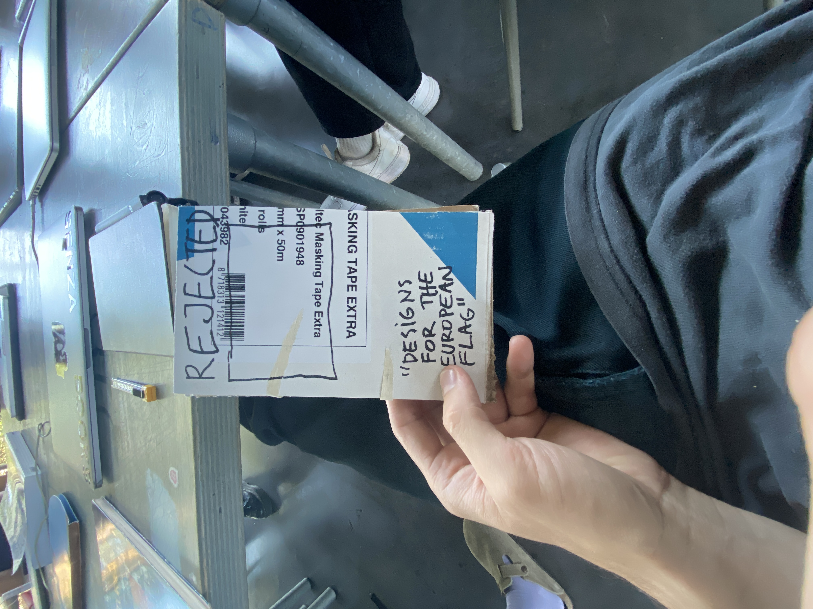
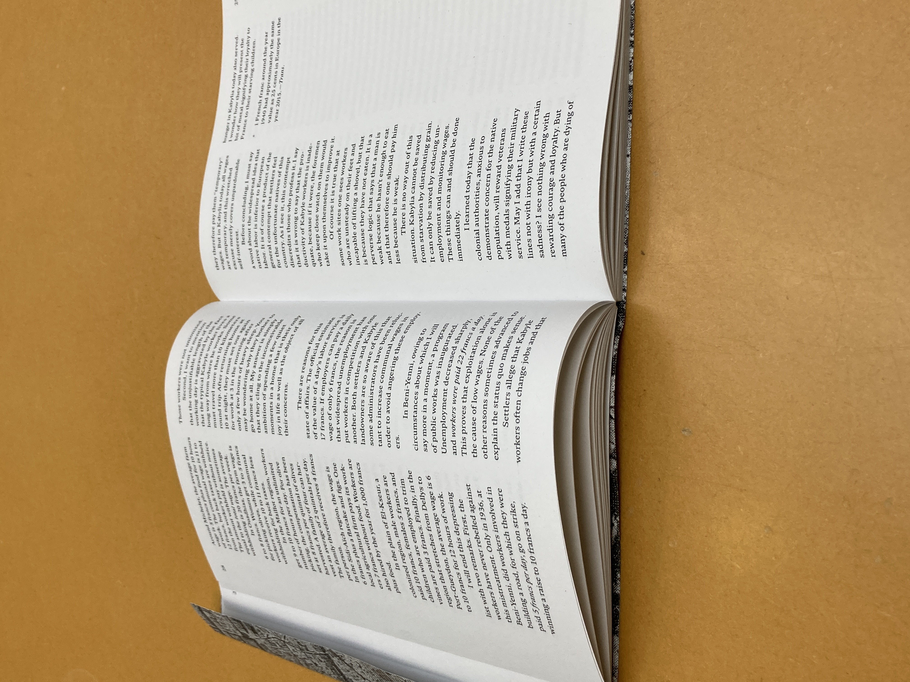
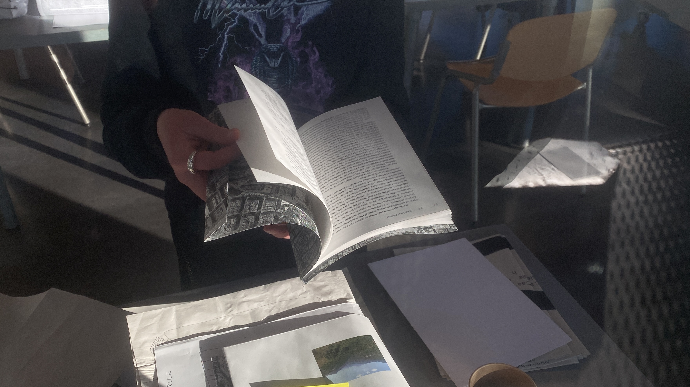

Reflections, insights and remarks on my typography class during the first semester of graphic design at The Royal Academy of Art in The Hague.
Venice and analysing stuff there.

To talk about myself through a publication I chose one of my favourites, Wirklichkeit books Rejected Designs for the European Flag. I brought a dummy that represented the physicality of the book as I remembered it. This relationship between people and printed matter is something that I was really enjoying during this semester.
During the flyers assignment I most importantly had a lot of fun. I enjoyed my thinking process and how they changed over time. I explored the possibility of using scripts and I feel like I could do it forever. I actually do use this technique of sketching in other projects now. Gradually when the assignment rules changed I was able to see which workflows I enjoy more and how I struggle with some things (for example use of colour, or the balance between a truly playful design and done-in-5-minutes flat imagery ) Why I enjoyed it is probably mostly due to the surprises that come along the "tiredness". It is satisfying to come up with an idea just because you are tired of something else you are looking at.
With the toolkit I had a bit of a struggle until I realised that I can do something else than the clean sans serif normal poster series. I found a nice variable typeface and I forced myself to not focus too much on the context of the artist and work since I felt like in an exercise like this it does not really matter. I could see myself doing it without thinking in a very intuitive and fast way. Because my plywood toolkit got blocked with drying paint I had to come up with a new way of putting the text on the sheets of paper. It felt very free and almost not natural. I sort of saved money on this assignment and I do not like it cause I feel that experimenting with more printing techniques could be a huge benefit. In general I still think that poster is the hardest piece of graphic design but at least I know something more about it.
Although I am happy with my choice of book I feel like I have spent too much time on it. I could maybe benefit from just being assigned a random book.
I decided to go for a rather traditional approach to designing a book and I am very glad I did it.
Since it is a collection of articles and other writings related to the sociaI issues I felt that a good way is to make the book feel like an approachable compendium. This was executed mostly by unification.
The size and layout allows for either 4,3 or 2 column spreads. There are two most important rules that dictate how I use this structure:

All the of the book is set in one size of ABC Marist Variable in weight of 430 units. (and matching italics) of size 10,15 and a leading of 14,173.

Whenever any chapter ends the next one starts in the next available column.
In terms of physical characteristics, I am happy that the book feels very light. At first I printed in the wrong direction so I had to reprint to allow for a nice feeling when flipping pages. These details could probably go unnoticed by some but these are the things I learned in Typography class.
It is definitely not an example of a super well made book but I feel it is a good step in this direction. I’m proud of what I did and I got nice feedback from You Although it wasn’t much talking sometimes it was just like one question or just one sentence and then I worked with it.
Learning by mistakes
Unfortunately there is one paragraph that starts without indentation, and the hyphenation settings could be way better, especially with the narrow columns. Also the page numbering at the top is confusing for some people that I asked for feedback.
Comparing the three main points of focus I feel I gained a lot of new skills and ways of looking during this semester. Apart from all the super helpful technical details like names for particular glyphs or a shortcut for “indent to here” I feel the most positive things I got out from Your class are about decision making and making our visual language clear for people we want to reach. Thank you! Looking forward to our talk. Stan